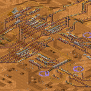
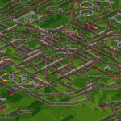
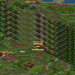

Advanced Building Revue 13: Self Regulating Stations II
Self-regulating Stations are one of the most insteresting stations known throughout OTTD. The purpose and design of such station may differ, but in general they make sure the self-regulating trains get fully loaded. This article will address the constructions and designs of Self-regulating stations, their limitations, and how this might be improved by building Asynchronous Self-regulating Stations – some preliminary concepts of Asynchronous Self-regulating stations will illuminate this topic, as well. Additionally, some of the newer Self-regulating Transfer stations are also included, as these stations act very similar to asynchronous stations. Here, some different designs will be shown, how is dealt with different features and the noteworthy exeptionalities.
If you are unfamiliar with Self-Regulating Networks (SRNW), then I advise to read Wiki – SRNW & ABR:09 – Self-regulating Stations I, prior to this article.
1. Synchronized SRNW stations
Self-Regulating Net-Work (SRNW) Stations are there in many different shapes and designs. One of the most common one is the single dummy loader SRNW station (Figure 1). Although these stations are considered old style, they are still one of the most commonly built SRWN stations for primary pickups, and even on low throughput secondary pickups. Commonly these stations utilize standard logic (with a not-gate, Figure 1 A), but a different approach of SRNW logic is by means of PBS (Figure 1 B). It is clear that this PBS / Path Reserving design is very simple to build and understand. Also, to my opinion this is one of the strongest methods for SRNW cargo transfer logic – because, its simplicity, relative easy to build & it is very compact as well.


Figure 1: Self-regulating stations with a single dummy loader: (A) a good example from PSG 199 with a large dummy loader; (B) standard PBS-reserved SRNW station design in a PAX game.
However, when building SRNW stations as such, there are neglectable drawbacks when they are used for low-production industries. But when used for extremely high-production industries these drawbacks can become problematic, due to the station design but also due to the limitations of the game itself. These are; train wave formation (due to the synchronized design) and station spread (maximum station spread and train length is both 64 tiles long).
These basic but synchronized designs – all trains enter, load & leave the station at the same time – basically means it generates a train wave every time a transfer is completed. Although this is a very common issue for stations in SRNW, it is clear that some kinds of precautions are required, especially for larger self-regulating stations (Figure 1 A). Taking care of this issue by means of spreading out the network load (conditional splits, flip-flop and/or priorities), should be a priority to prevent unnecessary jams.
The station spread is a game limitation, and although we like (insanely) large stations, it can become problematic if the single dummy loader is unable to load all the generated cargo, which can lead to decrease in rating and stacking of cargo (which is also commonly seen at self-regulating stations). To minimize this issue, this can be easily solved by expanding to more than one dummy loader (Figure 2). Notably, splitting the dummy loaders to even lengths as the network trains is a key step toward desynchronization.


Figure 2: Two examples of Self-regulating stations with multiple dummy loaders: (A) One of the first multiple dummy SRNW station seen in PSG 121, (B) An excellent example of a large, multiple dummy, SRNW station from PSG 180.
2. Asynchronous Station design
As stated before, larger synchronous SRNW stations can be problematic. Hence, desynchronization of the Self-regulating station to tackle this issue. Nickman came up with a first design; building more than one station close to each other. As predicted, this had limitations as well; no more than 3 different stations could serve the same primary, and the problem is not solved, just reduced because the single stations were still synchronous Self-regulating stations, but only smaller.
Another solution is desynchronizing the station train exit release. This can be simply done by slowing certain trains by means of “slow-bridges” to enhance the merging of trains at the station exit. But another trick is to release the network trains one-by-one, in a cascade fashion as made possible with the Self-regulating station design as shown below (Figure 3), utilizing the PBS / Path reserving method.

Figure 3: PBS / Path reserving Self-regulating station, which releases the network trains one-by-one.
Still, these methods are not solving the synchronization, and are just some tricks to make sure the station exit is not stressed with so much trains after each release, with small exception to the latter one (Figure 3), which is purely by design that the release is not all-in-one. This said; the search for better – non-cargo-stacking and asynchronous train release – Self-regulating station design carries on.
Also, when constructing a Self-regulating station in an asynchronous way, you will notice the so-called cargo stealing by the dummy loaders when the transfer and pickup are the same station. This forces you to use a separate pickup and transfer station to prevent this phenomenon; which ultimately means the station is a transfer station (feeder -> dummy -> network train). Also, transfer stations are generally asynchronous by design – whether they are Self-regulating or not.
3. Self-Regulating Transfer stations
With the knowledge from above I attempted to construct a transfer station, surrogate as an Asynchronous Self-regulating station. Importantly, they should be simple to understand, expandable, as fast as possible and having a relatively small footprint.
Dedicated Self-regulating Transfer stations
For my first attempt I decided to use path reserved logic for train release, in combination with single pickup and many transfer drop stations (Figure 4). This three bayed design is relative easy to understand and expandable as well. In principle you can do with just two stations, one pickup and one drop, but I wanted to see which platforms were served worse, and as predicted the latter platform started to stack up cargo pretty soon. This meant the amount of network trains was not abundant enough to serve the entire station properly.

Figure 4: First attempt on Asynchronous Self-regulating Station, using PBS / Path reserving and separate load & transfer station to prevent cargo stealing.
With my second attempt I wanted to fix the stacking of cargo, which meant that it might needs a check before release mechanism (Figure 5). Also, I wanted to increase the rate of dummy loader trains for a faster transfer of goods. Instead of using a common technique by Not-Gate to check if the trains are available and ready, I decided to make sure there was an excess of network trains at all times. This was done by adding an overflow to the station to maintain a positive supply of network trains. This also meant that the rate of fully loaded network trains was purely correlated to the production rate of the industry.

Figure 5: Second design, with double dummy and an overflow for excess supply of network trains.
Although the use of a twin feeder dummy was not really speeding up the availability of fully loaded feeders, it made sure the path was always reserved in front of the station. The added overflow improved and stabilized the availability of network trains to make sure the station never runs out of trains. It is however debatable if this method is a proper way of train handling. Firstly, the overflow can have only a few inside during high production, but in the contrary, a (to) large excess of trains can be present inside the depot when the production drops – especially for SRNW it is harder to predict the supply of trains by the network, and therefore using an overflow to maintain a steady supply is an easy solution. Secondly, an overflow system used inside in a SRNW can (and probably will) capture most of the network trains, therefore to prevent real train stacking in this station some kind of additional logic is required to prevent this (like an overflow-clock or regulated release). Lastly, another down side of overflows is that they can be relative slow and are for this same matter long-train unfriendly.
In my final attempt for an asynchronous Self-regulating station, I decided to combine the PBS design and a train check by means of Not-Gate logic (Figure 6). This kind of design is very similar to Self-regulating transfer station as shown below and only real difference is that the station is dedicated to only one primary industry.

Figure 6: Third design, with double dummy and Not-gate check for network train availability.
Again, twin feeder dummies were used to keep the path occupied in front of the transfer platforms. The Not-Gated check made sure that only when a network train was waiting, the transfer cycle would be able to continue. Although the stations transfer speed was not super-fast – due to the still relative long travel time of the feeder trains and the buggy PBS / two-way red signal – its reliability was quite high and that was important enough. It should be noted that when building a station as such, the exit tracks for the network trains must be free of PBS reservable tracks, otherwise the train can get stuck inside the station and thus break the next transfer cycle.
Dummy Self-regulating Transfer stations
The next station uses a hybrid BPS / Path reserving and Not-gated train check (Figure 7 A). The dummy train transfers the cargo from station to station, again he must go via a Way-Point, before he can reserve back into the second station and releasing the entrance. To reach the Way-Point, the pre-signal must be green, which in this case means there is a waiting network train. After the transfer, the dummy train returns to the load station via a second Way-Point, reserving and reoccupying the entrance path again. The second example is working in the same matter (Figure 7 B), the real difference here is that PBS -> two-way is utilized to make sure the paths are reserved correctly and faster as well. Be mindful that these two examples are not Logic Self-regulating Transfer – these stations use a dummy to regulate the transfer, but are fed cargo by other trains (feeder -> dummy -> network train) and therefore I call this a Dummy Self-regulating Transfer.


Figure 7: False Self-regulating Transfer stations: (A) Transfer station for four different cargoes, build in PZG 22; (B) Transfer station utilizing the PBS -> two-way method.
Concluding this section about Asynchronous Self-regulating stations, or perhaps better said, Dedicated Self-regulating Transfer stations – a clear trend is visible with simplicity over complexity and reliability. As told earlier, the key in asynchronous Self-regulating stations is constructing it as a transfer station; and as shown the possibilities are still endless in design and function. Presumably I would like to see that people are now more motivated to think of novel asynchronous SRNW designs and share them with the community toward the development of a total new series of Self-regulating stations.
Logic Self-regulating Transfer stations
Finally, I want to end this article with some Logic Self-regulating Transfer stations, which were built in PSG 239 & PZG 22 but similar constructions can be found in older games. Self-regulating Transfer stations are a species of their own and are possibly one of the most difficult stations to build, if it comes to requirements and construction. Though the principle is quite simple, to squeeze all the necessary elements into the station region can be challenging. For a proper transfer station the amount of stacking cargo should be limited to none if possible. Which means that the feeder trains have carry the same amount as the network trains, but also that the transfer takes place within a certain period, without losing cargo. Also, in most of the cases the network train have some kind of conditional order set (unreachable orders or a way point they must pass), or even no orders at all. This means that the station must be able to cope with this, and thus inevitable brings along some of the mayor challenges. To refresh your memory, some examples are shown above from previous PSG, like the one from PSG 199, PSG 200 and PSG 223 (Figure 8).
  


Figure 8: Example Self-regulating Transfer Stations: (A) Station in PSG 199 utilizing flip-flop with single memory; (B) Transfer island from PSG 200 (explanation in ABR 09); (C) Iron transfer station from PSG 223.
The following transfers were both build in PSG 239 (figure 9), in this game we had a SRNW with multiple cargoes, utilizing unreachable orders and PF traps. Both stations use PF traps to get the right network train waiting in front of the right platform. Both stations start their transfer cycle by means of a check (by Not-Gate). In the first example (figure 8 A) the Network Train is blocked by PBS until the Feeder Train reserves and releases the tracks. In the second example there is only one platform, so the transfer cycle will only continue when the Feeder train is finished unloading and left the station. In both examples, the logic goes through the station platform, meaning the next transfer cycle can only commence until (all) the platform(s) are fully released.


Figure 9: (A) Self-regulating Transfer Station “Mini Catzor”, (B) Self-regulating Transfer Station “Fat Cat”.
The next two stations were built in PZG 22 (Figure 10), both use a Not-Gated release mechanism and make excessive use of slow bridges to make sure the feeder trains are always unloading before the network trains enter the transfer station and take the cargo. At transfer station (Figure 9 A), the gates are relatively slow and its output is also connected to its input, which generates a very short green signal. The final transfer station (Figure 10 B) is a nice example using different train lengths, 2xTL4 feeder trains vs. 4xTL2 network trains, making a seamless transfer. However, it should be noted that this Self-regulating Transfer Station is not asynchronous.


Figure 10: Pro Zone Game 22: (A) Self-regulating Transfer with slow Not-gate; (B) Asynchronous Self-regulating Transfer.
Conclusions
It is clear that Self-regulating stations can be simple constructions but also very complicated, also different purposes, shapes and designs makes them a unique station family on their own. The development of new Self-regulating stations – with the path reserving method for example – is still leading toward new possibilities and keeps things interesting. Especially novel designs and ideas to construct compact Self-regulating Transfer stations can still be explored. I hope you guys enjoyed this small extension about Self-Regulating stations. I am looking forward to new ideas and feedback from the community, so start building!
Categories: Community News, Gameplay, OpenTTD, Public Server